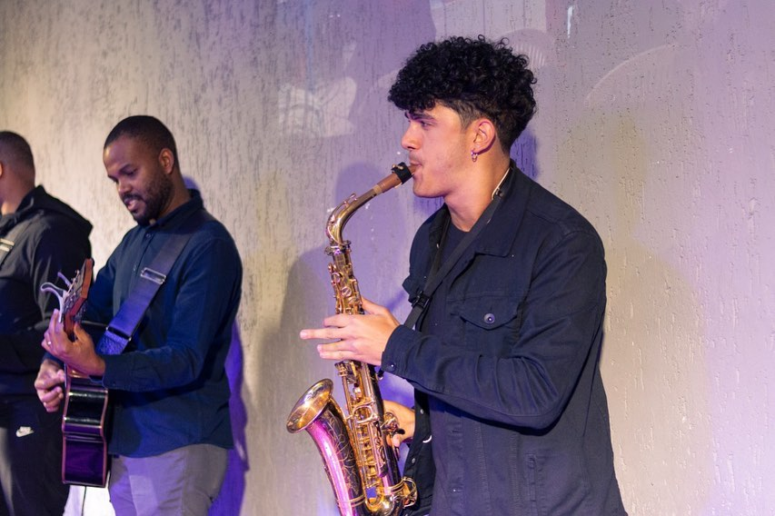
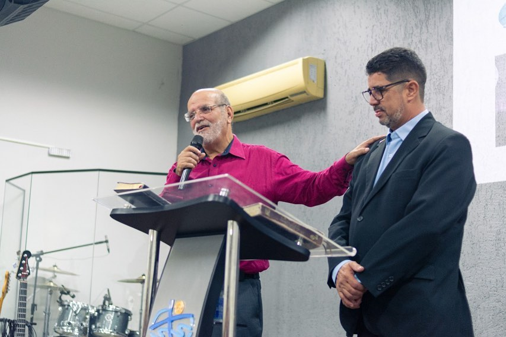
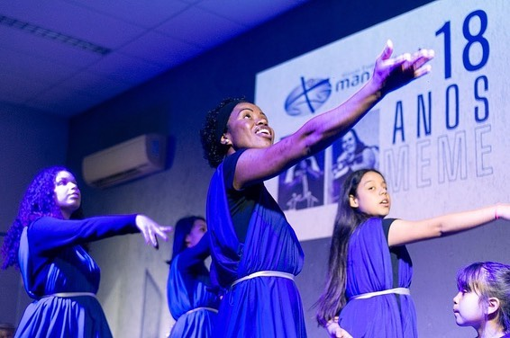

Missão Manancial
Uma experiência de fé, aprendizado e conexão em uma só plataforma.
Explore vídeos, estudos, encontros e conteúdos inspiradores em um ambiente moderno, acolhedor e pensado para fortalecer sua caminhada espiritual.
Cursos
em vídeo, no seu ritmo
Ao vivo
cultos e estudos
Comunidade
testemunhos e orações
Como funciona
- 1. Crie sua conta Leva um minuto: nome, e-mail, WhatsApp e uma senha.
- 2. Um líder libera o acesso Para proteger a comunidade, cada cadastro é conferido. Você recebe um e-mail.
- 3. Assista e participe Cursos, cultos ao vivo, devocionais e a comunidade, no celular ou no computador.
Venha nos visitar
Nossa comunidade
Cultos, louvor, ensino e celebrações que fazem parte da nossa caminhada.



Pronto para entrar nessa experiência?
Crie sua conta ou acesse agora e faça parte dessa comunidade.